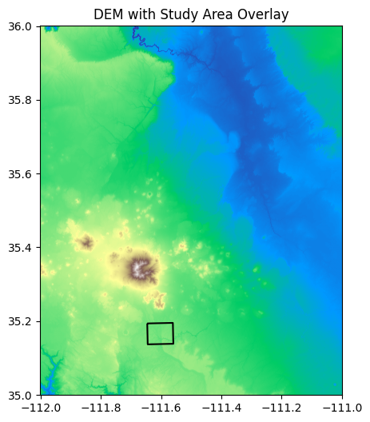

# Dealing with LFS for binder-friendly data science
from pathlib import Path
import requests
import geopandas as gpd
import rasterio
from rasterio.plot import show
import matplotlib.pyplot as plt
# Folders we’ll use (Binder-friendly, and safe even if gitignored)
DATA = Path("data")
DATA_LARGE = DATA / "large"
DATA_DERIVED = DATA / "derived"
DATA_LARGE.mkdir(parents=True, exist_ok=True)
DATA_DERIVED.mkdir(parents=True, exist_ok=True)Tutorial 1 - Finding, Saving, and Loading Elevation Data for Your Study Area
This notebook demonstrates a simple workflow for obtaining elevation data (DEM) for a study area using a shapefile and the National Map 10m (1/3 arcsecond) DEM accessed through their API.
import sys
def fetch(url: str, dest: Path, chunk=1<<20):
"""Download url to dest if missing. Chunked with a simple progress bar."""
if dest.exists() and dest.stat().st_size > 0:
print(f"✓ Using cached file: {dest} ({dest.stat().st_size/1e6:.1f} MB)")
return dest
with requests.get(url, stream=True, timeout=180) as r:
r.raise_for_status()
total = int(r.headers.get("Content-Length", 0))
print(f"↓ {url}\n→ {dest} ({total/1e6:.1f} MB)" if total else f"↓ {url}\n→ {dest}")
done = 0
with open(dest, "wb") as f:
for part in r.iter_content(chunk_size=chunk):
if not part: continue
f.write(part); done += len(part)
if total:
pct = 100 * done / total
sys.stdout.write(f"\r {pct:5.1f}% ({done/1e6:.1f}/{total/1e6:.1f} MB)")
sys.stdout.flush()
print("\n✓ Done.")
return dest1. Load Study Area Shapefile
We’ll use geopandas to load the study area shapefile located at data/Study_Area.
geopandas is a Python library used for working with geospatial data. It extends the capabilities of pandas to allow spatial operations on geometric types.
import geopandas as gpd
# Load the study area shapefile
shapefile_path = Path("data/Study_Area.shp")
gdf = gpd.read_file(shapefile_path)
# Display basic info
print(gdf)
gdf.plot(edgecolor='k', facecolor='none') Shape_Leng Shape_Area \
0 34363.321288 7.303913e+07
geometry
0 POLYGON Z ((-12428367.605 4190219.988 0, -1241... 
2. Find Elevation Data for Your Area
We’ll use the National Map’s Elevation Point Query Service to find a 30m DEM tile that covers our study area. For simplicity, we’ll use the bounding box of the shapefile.
# Ensure your study area is WGS84 lon/lat
gdf4326 = gdf.to_crs(4326) # <-- important
minx, miny, maxx, maxy = gdf4326.total_bounds
params = {
"bbox": f"{minx},{miny},{maxx},{maxy}",
"q": "1 arc-second DEM", # also try: "Digital Elevation Model (DEM) 1 arc-second"
"prodFormats": "GeoTIFF", # filter to GeoTIFFs
"max": 50 # number of items to return
}
url = "https://tnmaccess.nationalmap.gov/api/v1/products"
r = requests.get(url, params=params, timeout=60)
r.raise_for_status()
data = r.json()
# Collect GeoTIFF URLs (handles both 'downloadURL' and 'files' patterns)
tif_urls = []
for item in data.get("items", []):
u = item.get("downloadURL", "")
if u.endswith(".tif"):
tif_urls.append(u)
for f in item.get("files", []):
fu = f.get("url", "")
if fu.endswith(".tif"):
tif_urls.append(fu)
print("Found DEMs:", len(tif_urls))
#print("Example:", tif_urls if tif_urls else None)
for i, url in enumerate(tif_urls):
print(f"{i}: {url}")Found DEMs: 8
0: https://prd-tnm.s3.amazonaws.com/StagedProducts/Elevation/1/TIFF/historical/n36w112/USGS_1_n36w112_20210106.tif
1: https://prd-tnm.s3.amazonaws.com/StagedProducts/Elevation/1/TIFF/historical/n36w112/USGS_1_n36w112_20230418.tif
2: https://prd-tnm.s3.amazonaws.com/StagedProducts/Elevation/1/TIFF/historical/n36w112/USGS_1_n36w112_20240614.tif
3: https://prd-tnm.s3.amazonaws.com/StagedProducts/Elevation/1/TIFF/historical/n36w112/USGS_1_n36w112_20190924.tif
4: https://prd-tnm.s3.amazonaws.com/StagedProducts/Elevation/13/TIFF/historical/n36w112/USGS_13_n36w112_20210106.tif
5: https://prd-tnm.s3.amazonaws.com/StagedProducts/Elevation/13/TIFF/historical/n36w112/USGS_13_n36w112_20230418.tif
6: https://prd-tnm.s3.amazonaws.com/StagedProducts/Elevation/13/TIFF/historical/n36w112/USGS_13_n36w112_20240614.tif
7: https://prd-tnm.s3.amazonaws.com/StagedProducts/Elevation/13/TIFF/historical/n36w112/USGS_13_n36w112_20190924.tif3. Download Elevation Data
Download the DEM GeoTIFF file for the study area.
from urllib.parse import urlparse
# Option A: pick first 1/3 arcsecond result -- 4th item in list
dem_url = tif_urls[4] if tif_urls else None
# Option B (fixed tile — comment Option A and uncomment this to force a known URL)
# dem_url = "https://prd-tnm.s3.amazonaws.com/StagedProducts/Elevation/13/TIFF/historical/n36w112/USGS_13_n36w112_20210106.tif"
if not dem_url:
raise RuntimeError("No DEM URL found. Check TNM query.")
# Use the URL’s file name to save locally
dem_name = Path(urlparse(dem_url).path).name or "study_area_dem.tif"
dem_path = DATA_LARGE / dem_name
dem_path = fetch(dem_url, dem_path)
print("DEM local path:", dem_path)↓ https://prd-tnm.s3.amazonaws.com/StagedProducts/Elevation/13/TIFF/historical/n36w112/USGS_13_n36w112_20210106.tif
→ data\large\USGS_13_n36w112_20210106.tif (365.3 MB)
100.0% (365.3/365.3 MB)
✓ Done.
DEM local path: data\large\USGS_13_n36w112_20210106.tif4. Save the DEM or TIFF
The DEM file has been saved as a GeoTIFF in the data/large folder. Note that all processing in binder is temporary, if you want to save or download uncomment the lines in the last cell and download the output as a zip file.
5. Load and Display Elevation Data
We’ll use rasterio and matplotlib to load and visualize the elevation data.
import matplotlib.pyplot as plt
from rasterio.plot import show
# Open DEM and reproject study area to match DEM CRS
with rasterio.open(dem_path) as src:
dem_crs = src.crs
gdf_dem = gdf.to_crs(dem_crs) # IMPORTANT: match CRS for correct overlay
# Plot DEM, then overlay boundaries
with rasterio.open(dem_path) as src:
fig, ax = plt.subplots(figsize=(8, 6))
show(src, ax=ax, cmap="terrain")
gdf_dem.boundary.plot(ax=ax, color="k", linewidth=1.5)
ax.set_title("DEM with Study Area Overlay")
plt.show()
6) Clip the DEM to the shapefile (mask by polygon) and save
from shapely.geometry import mapping
import numpy as np
from rasterio.mask import mask
from shapely.geometry import mapping
import os
# Union multi-part polygons to one geometry (faster, cleaner mask)
study_geom = [mapping(gdf_dem.union_all())]
with rasterio.open(dem_path) as src:
out_image, out_transform = mask(src, study_geom, crop=True, nodata=src.nodata)
out_meta = src.meta.copy()
# Update metadata for the clipped raster
out_meta.update({
"height": out_image.shape[1],
"width": out_image.shape[2],
"transform": out_transform
})
clipped_dir = "data/derived"
os.makedirs(clipped_dir, exist_ok=True)
dem_clipped_path = os.path.join(clipped_dir, "study_area_dem_clipped.tif")
# Preserve nodata; if original had none, set one
if out_meta.get("nodata") is None:
out_meta["nodata"] = -9999
# Replace NaNs with nodata if needed
out_image = np.where(np.isnan(out_image), out_meta["nodata"], out_image)
with rasterio.open(dem_clipped_path, "w", **out_meta) as dst:
dst.write(out_image)
print(f"Clipped DEM saved to: {dem_clipped_path}")Clipped DEM saved to: data/derived\study_area_dem_clipped.tif7) Plot the clipped DEM with shapefile overlay
with rasterio.open(dem_clipped_path) as src:
fig, ax = plt.subplots(figsize=(8, 6))
show(src, ax=ax, cmap="terrain")
gdf_dem.boundary.plot(ax=ax, color="k", linewidth=1.5)
ax.set_title("Clipped DEM with Study Area Boundary")
plt.show()
import shutil
from IPython.display import FileLink
zip_path = Path("derived_outputs.zip")
if zip_path.exists():
zip_path.unlink()
shutil.make_archive(zip_path.stem, "zip", DATA_DERIVED)
FileLink(str(zip_path))